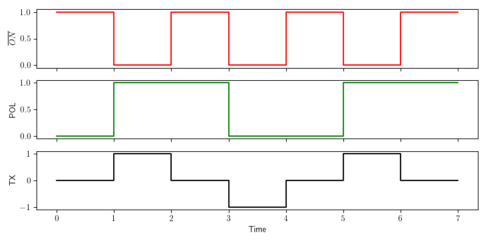

Generate User Defined Sequences
In addition to the pre-programmed 50% and 100% duty-cycle control signals the ZT-100 allows user-defined control signals in Custom mode. This enables specialized ternary transmission sequences when required by the survey design.
Control Signals
The transmitter output can have three states:
Positive ON
OFF
Negative ON
Positive ON and Negative ON refer to current flow through the transmitter in opposite directions. The ZT-100 defines the output signal using two binary control signals:
ON#
POL
Each control signal can be LOW or HIGH. HIGH corresponds to 3.3 V and LOW corresponds to 0 V.
ON# controls whether the transmitter is on. The # indicates active low. When ON# is LOW the transmitter is on; when ON# is HIGH the transmitter is off.
POL controls the direction of current flow. POL HIGH corresponds to positive current flow, POL LOW corresponds to negative current flow.
Output Signal Example

Generation of a 50% duty-cycle output signal.
The red graph shows ON#, the green graph shows POL, and the black graph shows resulting transmitter output. The sequence includes all three states.
Note
The control signals are binary and do not contain amplitude information. The output signal amplitude is set on the transmitter hardware.
Generating the Signal Definition File
To use a user-defined signal, create a .usm file and upload it via the web interface. The file contains a sequence of control signal states. At each base clock tick, the next POL and ON# values are read and applied. When the end of file is reached the sequence loops back to the beginning.
File Format
The .usm file is stored in binary form and contains three parts:
Sequence length
List of POL entries
List of ON# entries
The sequence length is a 16-bit unsigned integer in big-endian byte order, allowing up to 65,536 entries.
POL and ON# entries are stored as packed bits. Every eight consecutive bits are stored as a byte. If the sequence length is not a multiple of 8, pad the final byte with zeros. The firmware ignores padded bits based on the length value.
Example: Generate a PRBS .usm File
The following Python code generates a 4th order PRBS sequence file:
1import numpy as np
2np.set_printoptions(formatter={'int':hex})
3
4pol = [1,1,0,0,0,1,0,0,1,1,0,1,0,1,1] # sequence for polarity
5on_ = [0,0,0,0,0,0,0,0,0,0,0,0,0,0,0] # sequence for ON# (active low)
6slen = len(pol) # sequence length
7
8# Pad to a multiple of 8
9apol = 8-len(pol)%8
10for i in range(apol):
11 pol.append(0)
12 on_.append(0)
13
14pol_bytes = (np.packbits(np.array(pol),bitorder='big'))
15on_bytes = (np.packbits(np.array(on_),bitorder='big'))
16print(pol_bytes)
17print(on_bytes)
18
19print('Sequence length = {}, {}'.format(slen,slen.to_bytes(2,byteorder='big')))
20print("Pol array = {}".format(pol))
21print("ON_ array = {}".format(on_))
22
23with open ("PRBS_4.usm", "wb") as binary_file:
24 binary_file.write(slen.to_bytes(2,byteorder='big'))
25 binary_file.write(pol_bytes)
26 binary_file.write(on_bytes)
Uploading a .usm File
Enable Wi-Fi on the ZT-100.
Open the web interface and switch to Custom mode.
Use the file loader to upload the .usm file.
Transmitting a User Defined Sequence
The .usm file defines the control sequence only. Select the desired base frequency in the web interface to generate the final transmitter waveform.